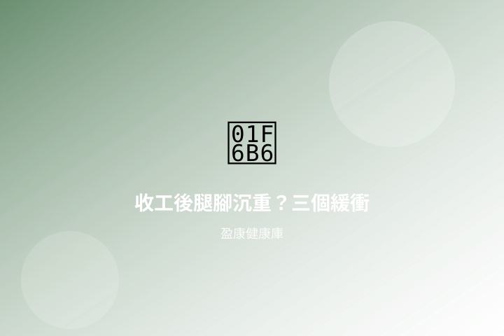

收工後腿腳沉重？三個通勤緩衝小節奏

香港人一日往往「坐辦公室、站月台、再擠車廂」。到家時小腿與腳掌常感沉重、脹脹的，連上幾級樓梯都提不起勁。以下整理三個可插進通勤與收工縫隙的緩衝節奏，屬一般健康資訊。
本文屬一般健康資訊，並非醫療建議；並非《不良廣告（醫藥）條例》（第231章）或《中醫藥條例》所指之診斷、治療或預防疾病宣傳。腿腳劇烈腫痛、單側突然發紅發熱、步行明顯受限或其他持續不適，請咨詢合資格醫護人員。
1. 下車後先「三分鐘落地」
到站或落車後，不要立刻急走趕下一程。先站穩，雙腳與肩同寬，腳跟輕微抬起再放下十次；再把體重左右輪換，讓小腿與腳掌有短暫「喚醒」。重點是打斷長時間固定姿勢，而不是加快腳步。
- 捷運扶手改換握側，避免長時間同一腳受力。
- 有空位時雙腳平放，勿長時間交叉雙腿。
- 穿鞋優先選鞋跟穩、前掌有緩衝的款式，減低落地衝擊。
2. 小腿與腳掌的兩組伸展
回家換鞋後，可先做靠牆提踵：雙手扶牆，腳跟緩緩抬起、再慢慢放下，十至十二次；再坐姿伸腳尖：一腳伸直，腳尖向上勾十五秒，再指向前十五秒，左右交替。動作宜慢，呼吸保持自然。
若日間久站（零售、廚房、倉庫），可在休息空隙把一腳放上矮凳或階梯邊緣，輕輕前傾拉長小腿後側十五秒，換邊。感到刺痛或不穩就立刻停下。
3. 口服輕養生：讀標籤、排進晚間節奏
若日常步行或上下樓常感腰膝乏力、腿腳沉重，可考慮選用標示適合腰膝／步行節奏的口服膠囊或丸劑，於清潔雙手後依標籤說明與劑量服用，並留意與其他補充品或藥物的併用提示。這屬日常輕養生選購做法，不是治療或預防疾病；孕哺、慢性病或正在服藥者請先咨詢藥劑師或醫護。
盈康小提示：口服宜固定同一個時段（例如晚膳後），較易養成節奏；購入前先讀清成分、劑量與貯存條件，並保留包裝說明。
想了解更多口服筋骨與外用系列，可瀏覽所有產品，或 WhatsApp 6222 7238 查詢。
推薦產品

健步虎潛丸 320粒
關注通勤後腿腳緩衝節奏時，可先看看口服的用法與成分標示。
瀏覽產品詳情 →